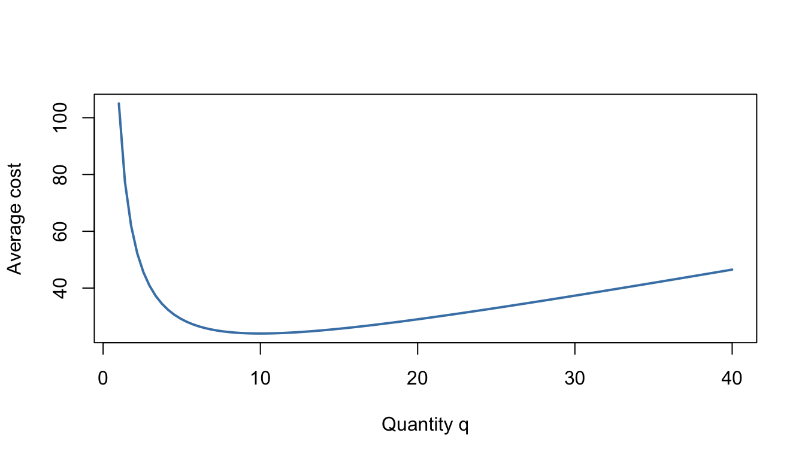

2 Algebraic Fluency
Algebra is the working language of Management Science. Demand curves, cost functions, growth models and optimisation problems are all written and solved algebraically, so it pays to be quick and accurate here before term starts. This chapter rebuilds the core skills: indices, surds, quadratics, simultaneous equations, inequalities, polynomials, rational expressions and partial fractions.
Work through it at your own pace. If a section feels easy, try the challenging example and the exercises, then move on. If a section feels shaky, slow down — fluency now will save you a great deal of time later.
Why this matters: Almost every quantitative module you take — Maths 1 and 2, Business Economics 1 and 2, Data Analytics — assumes you can rearrange, factorise and simplify without hesitation. Weak algebra is the single most common reason students struggle with university-level optimisation and modelling, not the new ideas themselves.
2.1 Indices
2.1.1 Key idea
Indices (powers) obey a small set of laws, and these laws extend to negative and fractional exponents:
\[x^p \times x^q = x^{p+q}, \qquad \frac{x^p}{x^q} = x^{p-q}, \qquad (x^p)^q = x^{pq}\] \[ x^{\frac{1}p} = \sqrt[p]{x}, \qquad x^{-p} = \frac{1}{x^p}, \qquad x^0 = 1\] Fractional and negative indices appear constantly in growth models and in expressions like \(q^{-1}\) (which you will meet as "per unit" quantities).
2.1.2 Worked examples
Example (simple). Simplify \(\dfrac{x^3 \times x^5}{x^2}\).
Using the laws: \(x^{3+5-2} = x^6\).
Example (moderate). Evaluate \(27^{2/3}\) and simplify \(\left(16x^8\right)^{3/4}\).
\(27^{2/3} = \left(\sqrt[3]{27}\right)^2 = 3^2 = 9\).
\(\left(16x^8\right)^{3/4} = 16^{3/4} \, x^{8 \times 3/4} = \left(\sqrt[4]{16}\right)^3 x^6 = 8x^6\).
Example (challenging). Solve \(2^{2x+1} = 32^{x-1}\).
Write both sides as powers of 2: \(32 = 2^5\), so
\[2^{2x+1} = 2^{5(x-1)} = 2^{5x-5}.\]
Equating the exponents: \(2x + 1 = 5x - 5\), giving \(x = 2\).
2.1.3 Practice exercises
- Simplify \(\dfrac{y^7 \times y^{-2}}{y^3}\).
- Evaluate \(8^{-2/3}\).
- Simplify \(\left(25a^4b^{-2}\right)^{1/2}\), assuming \(a, b > 0\).
- Solve \(3^{x+2} = 81^{x}\).
Common mistakes:
- \((a + b)^n \ne a^n + b^n\). Powers do not distribute over addition.
- \(a^m \times a^n = a^{m+n}\), not \(a^{mn}\). Multiplying powers means adding exponents.
- \(a^{-n}\) is a reciprocal, not a negative number: \(2^{-3} = \tfrac{1}{8}\), not \(-8\).
Why this matters: Compound interest and growth models rest entirely on index laws: an investment growing at rate \(r\) for \(n\) periods is worth \(P(1+r)^n\), and solving "how long until it doubles?" means manipulating exponents (a job finished off by logarithms in Chapter 6).
Self-check: rational exponents
Q1. Evaluate \(16^{3/4}\):
Q2. Which of the following equals \(27^{-2/3}\)?
- \(\dfrac{1}{9}\)
- \(9\)
- \(-18\)
- \(-\dfrac{1}{9}\)
Answer:
Q3. Which of the following is \(\dfrac{x^3 \times x^5}{x^2}\) in simplified form?
- \(x^{7.5}\)
- \(x^{13}\)
- \(x^6\)
- \(x^{10}\)
Answer:
Q4. Which of the following is \(\left(25a^4\right)^{1/2}\), for \(a > 0\)?
- \(25a^2\)
- \(5a^2\)
- \(5a^4\)
- \(12.5a^2\)
Answer:
Q5. Solve \(2^{\,x+3} = 32\). Give \(x\):
Q1. \(16^{3/4} = \left(\sqrt[4]{16}\right)^3 = 2^3 = 8\).
Q2. (A). The negative exponent means reciprocal, not negative: \(27^{-2/3} = \dfrac{1}{27^{2/3}} = \dfrac{1}{9}\).
Q3. (C). Add and subtract the exponents: \(x^{3+5-2} = x^6\). Multiplying them — giving \(x^{15}\)-style answers like (A) or (B) — is the classic slip.
Q4. (B). The power applies to both factors: \(25^{1/2}\,a^{4 \times 1/2} = 5a^2\). Option (A) forgets to square-root the 25; option (C) forgets to halve the power of \(a\).
Q5. Write both sides as powers of 2: \(32 = 2^5\), so \(x + 3 = 5\), giving \(x = 2\).
2.2 Surds
2.2.1 Key idea
A surd is an irrational root such as \(\sqrt{2}\) left in exact form. The key manipulations are
\[\sqrt{ab} = \sqrt{a}\sqrt{b}, \qquad \sqrt{\frac{a}{b}} = \frac{\sqrt{a}}{\sqrt{b}},\]
and rationalising the denominator — rewriting a fraction so no surd remains underneath.
2.2.2 Worked examples
Example (simple). Simplify \(\sqrt{48}\).
\(\sqrt{48} = \sqrt{16 \times 3} = 4\sqrt{3}\).
Example (moderate). Rationalise \(\dfrac{5}{\sqrt{3}}\).
Multiply top and bottom by \(\sqrt{3}\): \(\dfrac{5}{\sqrt{3}} \times \dfrac{\sqrt{3}}{\sqrt{3}} = \dfrac{5\sqrt{3}}{3}\).
Example (challenging). Rationalise \(\dfrac{2}{3 - \sqrt{5}}\).
Multiply by the conjugate \(3 + \sqrt{5}\):
\[\frac{2}{3-\sqrt{5}} \times \frac{3+\sqrt{5}}{3+\sqrt{5}} = \frac{2(3+\sqrt{5})}{9 - 5} = \frac{2(3+\sqrt{5})}{4} = \frac{3+\sqrt{5}}{2}.\]
2.2.3 Practice exercises
- Simplify \(\sqrt{75} + \sqrt{27}\).
- Rationalise \(\dfrac{6}{\sqrt{2}}\).
- Rationalise \(\dfrac{4}{\sqrt{7}-\sqrt{3}}\).
Common mistakes:
- \(\sqrt{a+b} \ne \sqrt{a} + \sqrt{b}\). Try \(a = b = 1\): \(\sqrt{2} \ne 2\).
- When using the conjugate, remember \((3-\sqrt{5})(3+\sqrt{5}) = 9 - 5\), not \(9 + 5\).
Self-check: surds
Q1. Simplify \(\sqrt{48}\), writing it as \(k\sqrt{3}\). \(\;k =\)
Q2. Which of the following equals \(\sqrt{75} + \sqrt{27}\)?
- \(\sqrt{102}\)
- \(8\sqrt{3}\)
- \(8\sqrt{6}\)
- \(15\sqrt{3}\)
Answer:
Q3. Rationalise \(\dfrac{6}{\sqrt{2}}\), writing it as \(k\sqrt{2}\). \(\;k =\)
Q4. Which of the following equals \(\dfrac{2}{3 - \sqrt{5}}\) after rationalising?
- \(\dfrac{3 - \sqrt{5}}{2}\)
- \(\dfrac{3 + \sqrt{5}}{7}\)
- \(\dfrac{3 + \sqrt{5}}{2}\)
- \(3 + \sqrt{5}\)
Answer:
Q5. Evaluate \(\big(\sqrt{5} + \sqrt{2}\big)\big(\sqrt{5} - \sqrt{2}\big)\):
Q1. \(\sqrt{48} = \sqrt{16 \times 3} = 4\sqrt{3}\), so \(k = 4\). Always pull out the largest square factor.
Q2. (B). Simplify each surd first: \(\sqrt{75} = 5\sqrt{3}\) and \(\sqrt{27} = 3\sqrt{3}\), so the sum is \(8\sqrt{3}\). Option (A) is the classic trap: \(\sqrt{a} + \sqrt{b} \ne \sqrt{a + b}\) — try \(a = b = 1\) to see why.
Q3. \(\dfrac{6}{\sqrt{2}} \times \dfrac{\sqrt{2}}{\sqrt{2}} = \dfrac{6\sqrt{2}}{2} = 3\sqrt{2}\), so \(k = 3\).
Q4. (C). Multiply by the conjugate: \(\dfrac{2}{3-\sqrt{5}} \times \dfrac{3+\sqrt{5}}{3+\sqrt{5}} = \dfrac{2(3+\sqrt{5})}{9 - 5} = \dfrac{3+\sqrt{5}}{2}\). Option (B) is the conjugate sign error — computing the denominator as \(9 + 5 = 14\) instead of \(9 - 5\); option (A) uses the wrong conjugate entirely and doesn't clear the surd.
Q5. Difference of two squares: \(\big(\sqrt{5}\big)^2 - \big(\sqrt{2}\big)^2 = 5 - 2 = 3\). No surds survive — which is exactly why conjugates work in Q4.
2.3 Quadratics
2.3.1 Key idea
A quadratic function has the form \(f(x) = ax^2 + bx + c\) with \(a \ne 0\). Its graph is a parabola: opening upwards if \(a > 0\), downwards if \(a < 0\). Three solution methods matter:
- Factorising (fastest, when it works),
- Completing the square (reveals the vertex — vital for optimisation),
- The quadratic formula \(x = \dfrac{-b \pm \sqrt{b^2 - 4ac}}{2a}\) (always works).
The discriminant \(\Delta = b^2 - 4ac\) tells you how many real roots exist: two (\(\Delta > 0\)), one repeated (\(\Delta = 0\)), or none (\(\Delta < 0\)).
2.3.2 Worked examples
Example (simple). Solve \(x^2 - 5x + 6 = 0\).
Factorise: \((x-2)(x-3) = 0\), so \(x = 2\) or \(x = 3\).
Example (moderate). Write \(x^2 + 6x + 2\) in completed-square form and state the minimum value.
\[x^2 + 6x + 2 = (x+3)^2 - 9 + 2 = (x+3)^2 - 7.\]
Since \((x+3)^2 \ge 0\), the minimum value is \(-7\), attained at \(x = -3\).
Example (moderate). Find the value of \(k\) for which \(kx^2 + 4x + 1 = 0\) has a repeated root.
Repeated root means \(\Delta = 0\): \(16 - 4k = 0\), so \(k = 4\).
Example (challenging — a Management Science application). A firm sells a product at price \(p\) (pounds). Market research suggests it will sell \(q = 100 - 2p\) units. Find the price that maximises revenue, and the maximum revenue.
Revenue is price times quantity:
\[R(p) = p(100 - 2p) = 100p - 2p^2.\]
Complete the square:
\[R(p) = -2\left(p^2 - 50p\right) = -2\left[(p - 25)^2 - 625\right] = -2(p-25)^2 + 1250.\]
Since \(-2(p-25)^2 \le 0\), revenue is maximised when \(p = 25\), giving \(R = 1250\). The best price is £25, earning £1250.
Notice we optimised without calculus. In Chapter 7 you will solve the same kind of problem with derivatives — completing the square is the algebraic preview.
2.3.3 Practice exercises
- Solve \(x^2 + x - 12 = 0\) by factorising.
- Write \(x^2 - 8x + 3\) in the form \((x - a)^2 + b\), and state the coordinates of the vertex.
- For what values of \(c\) does \(x^2 + 6x + c = 0\) have no real roots?
- A cinema charges £\(p\) per ticket and expects to sell \(q = 300 - 10p\) tickets. Find the revenue-maximising price.
Common mistakes:
- When completing the square, \(x^2 + 6x = (x+3)^2 - 9\): don't forget to subtract the \(9\).
- Never divide an equation through by \(x\) to "simplify" — you may throw away the solution \(x = 0\). Factorise instead: \(x^2 = 5x \Rightarrow x(x-5)=0\).
- In the quadratic formula, \(-b\) applies even when \(b\) is already negative: for \(x^2 - 4x + 1\), the formula starts \(x = \frac{4 \pm \cdots}{2}\).
Self-check: quadratics
Q1. Which of the following is the factorised form of \(x^2 - x - 12\)?
- \((x - 3)(x + 4)\)
- \((x + 3)(x - 4)\)
- \((x - 2)(x + 6)\)
- \((x - 6)(x + 2)\)
Answer:
Q2. Find the discriminant of \(2x^2 + 3x - 5\):
How many real roots does this equation have?
Q3. For what value of \(k\) does \(x^2 + 6x + k = 0\) have a repeated root? \(k =\)
Q4. The curve \(y = (x - 4)^2 - 7\) has its vertex at \((a, b)\), where \(a =\) and \(b =\)
Is this vertex a maximum or a minimum?
Q5. Which of the following is \(x^2 + 8x + 11\) in completed-square form?
- \((x + 4)^2 - 5\)
- \((x + 4)^2 + 11\)
- \((x + 8)^2 - 53\)
- \((x + 4)^2 - 16\)
Answer:
Q1. (B). Expand to check: \((x+3)(x-4) = x^2 - x - 12\) ✓. Option (A) gives \(x^2 + x - 12\) — the sign of the middle term is the usual casualty; a ten-second expansion check catches it.
Q2. \(\Delta = b^2 - 4ac = 3^2 - 4(2)(-5) = 9 + 40 = 49\). Watch the double negative: \(-4 \times 2 \times (-5)\) is \(+40\). Since \(\Delta > 0\), there are two distinct real roots (and since 49 is a perfect square, the quadratic even factorises nicely).
Q3. A repeated root means \(\Delta = 0\): \(36 - 4k = 0\), so \(k = 9\).
Q4. From \((x - 4)^2 - 7\): the squared bracket is smallest (zero) when \(x = 4\), giving \(y = -7\) — vertex \((4, -7)\). Reading the vertex as \((-4, -7)\) is the classic sign slip: the bracket \((x - 4)\) means the graph of \(x^2\) shifted 4 to the right. The \(x^2\) coefficient is positive, so the parabola opens upwards and the vertex is a minimum.
Q5. (A). \(x^2 + 8x + 11 = (x + 4)^2 - 16 + 11 = (x + 4)^2 - 5\). Option (B) forgets to subtract the \(16\); option (D) subtracts it but forgets the original \(+11\) is still there; option (C) halves nothing and squares everything.
Why this matters: Revenue and profit functions are often quadratic in price or quantity, because revenue = price × quantity and demand falls as price rises. "Find the maximum" questions in economics and operations are quadratics in disguise, and the discriminant tells you whether a break-even point even exists.
2.4 Simultaneous equations
2.4.1 Key idea
Two equations in two unknowns can (usually) be solved together, by elimination or substitution. When one equation is linear and one is quadratic, substitute the linear equation into the quadratic one. Graphically, solutions are intersection points.
2.4.2 Worked examples
Example (simple). Solve \[3x + 2y = 12, \qquad x - y = 1.\]
From the second equation, \(x = y + 1\). Substitute: \(3(y+1) + 2y = 12 \Rightarrow 5y = 9 \Rightarrow y = 1.8\), and \(x = 2.8\).
Example (moderate). Solve \[y = x^2 - 3x + 4, \qquad y = x + 1.\]
Set the right-hand sides equal: \(x^2 - 3x + 4 = x + 1\), so \(x^2 - 4x + 3 = 0\), giving \((x-1)(x-3) = 0\).
Solutions: \((1, 2)\) and \((3, 4)\) — the line cuts the parabola twice.
Example (challenging — market equilibrium). In a market, the demand and supply curves are
\[\text{Demand: } p = 120 - 2q, \qquad \text{Supply: } p = 30 + q,\]
where \(p\) is price and \(q\) is quantity. Find the equilibrium price and quantity.
At equilibrium the two prices agree:
\[120 - 2q = 30 + q \;\Rightarrow\; 90 = 3q \;\Rightarrow\; q = 30, \quad p = 60.\]
The market clears at 30 units and a price of 60.
2.4.3 Practice exercises
- Solve \(2x + 3y = 7\) and \(4x - y = 7\).
- Solve \(y = x^2 + 2x - 1\) and \(y = 2x + 3\).
- Demand is \(p = 90 - 3q\) and supply is \(p = 18 + q\). Find the equilibrium quantity and price.
- Show that the line \(y = 2x - 5\) does not intersect the curve \(y = x^2 - x - 1\). (Hint: what does the discriminant tell you?)
Common mistakes:
- After finding \(x\), remember to find \(y\) too — and to state pairs of solutions for linear/quadratic systems, matching each \(x\) with its own \(y\).
- Substitute back into the simpler equation to reduce arithmetic slips, and check your pair satisfies both equations.
Why this matters: Market equilibrium, break-even analysis (where cost equals revenue), and constraint intersections in linear programming all reduce to solving simultaneous equations. In your first-year modules the systems get bigger — matrices take over — but the logic is exactly this.
2.5 Inequalities
View the full playlist on YouTube
2.5.1 Key idea
Inequalities behave like equations, with one crucial exception: multiplying or dividing by a negative number reverses the inequality sign. For quadratic inequalities, solve the corresponding equation first, then use a sketch to decide which regions satisfy the inequality. Answers can be written in interval notation, e.g. \([-2, 3]\), or set notation, e.g. \(\{x : -2 \le x \le 3\}\).
2.5.2 Worked examples
Example (simple). Solve \(3 - 2x < 7\).
Subtract 3: \(-2x < 4\). Divide by \(-2\) and flip the sign: \(x > -2\). In interval notation: \((-2, \infty)\).
Example (moderate). Solve \(x^2 - x - 6 \le 0\).
Factorise: \((x-3)(x+2) \le 0\). The roots are \(x = -2\) and \(x = 3\). The parabola opens upwards, so it is below (or on) the axis between the roots:
\[-2 \le x \le 3, \quad \text{i.e. } x \in [-2, 3].\]
Example (challenging — when is the firm profitable?). A firm's profit from producing \(q\) units is
\[P(q) = -2q^2 + 60q - 250.\]
For what production levels is the firm profitable?
We need \(P(q) > 0\), i.e. \(-2q^2 + 60q - 250 > 0\). Divide by \(-2\) (flip the sign): \(q^2 - 30q + 125 < 0\). By the quadratic formula,
\[q = \frac{30 \pm \sqrt{900 - 500}}{2} = \frac{30 \pm 20}{2} = 5 \text{ or } 25.\]
The parabola \(q^2 - 30q + 125\) opens upwards, so it is negative between the roots. The firm is profitable for \(5 < q < 25\) — the two roots are its break-even points.
2.5.3 Practice exercises
- Solve \(5 - 3x \ge 11\), giving your answer in set notation.
- Solve \(x^2 + 2x - 8 > 0\), giving your answer in interval notation.
- Profit is \(P(q) = -q^2 + 40q - 300\). Find the range of output for which the firm makes a profit.
- Find the values of \(x\) for which \(2x^2 \le x + 3\).
Common mistakes: - Forgetting to reverse the sign when multiplying or dividing by a negative number. - Solving \(x^2 > 9\) as \(x > 3\) only. The full answer is \(x > 3\) or \(x < -3\) — always sketch. - Writing a "between" answer for an upward parabola that is above the axis (or vice versa). The sketch settles it in two seconds.
Self-check: inequalities
Q1. Solve \(3 - 2x < 7\). In interval notation, the solution is:
- \((-\infty, -2)\)
- \((-2, \infty)\)
- \([-2, \infty)\)
- \((-\infty, 2)\)
Answer:
Q2. Solve \(x^2 - x - 6 \le 0\). In interval notation, the solution is:
- \((-\infty, -2] \cup [3, \infty)\)
- \((-2, 3)\)
- \([-2, 3]\)
- \([-3, 2]\)
Answer:
Q3. Which of the following is the full solution of \(x^2 > 9\)?
- \(x > 3\)
- \(-3 < x < 3\)
- \(x \ge 3\) or \(x \le -3\)
- \(x < -3\) or \(x > 3\)
Answer:
Q4. A firm's profit is \(P(q) = -q^2 + 24q - 80\). It is profitable (\(P > 0\)) for \(a < q < b\), where \(a =\) and \(b =\)
Q5. Which of the following is the interval \((-\infty, 5]\) written in set notation?
- \(\{x : x < 5\}\)
- \(\{x : x \le 5\}\)
- \(\{x : x \ge 5\}\)
- \(\{x : |x| \le 5\}\)
Answer:
Q1. (B). Subtract 3: \(-2x < 4\); divide by \(-2\) and flip the sign: \(x > -2\), i.e. \((-2, \infty)\). Option (A) is exactly what you get by forgetting the flip. Option (C) wrongly includes the endpoint — the inequality is strict.
Q2. (C). Factorise: \((x - 3)(x + 2) \le 0\), roots at \(-2\) and \(3\). The parabola opens upwards, so it is below (or on) the axis between the roots: \([-2, 3]\). The \(\le\) includes the endpoints, so the brackets are square — option (B) is the right region with the wrong brackets, and option (A) is the region for the opposite inequality.
Q3. (D). Sketch \(y = x^2 - 9\): it is above the axis on both outer branches. Option (A) — just taking the square root of both sides — misses the entire negative branch, and is the single most common inequalities error. Option (C) has the right shape but wrongly includes the boundary points, where \(x^2 = 9\) exactly.
Q4. \(P(q) > 0 \Leftrightarrow q^2 - 24q + 80 < 0\) (dividing by \(-1\) flips the inequality). The roots are \(q = \dfrac{24 \pm \sqrt{576 - 320}}{2} = \dfrac{24 \pm 16}{2} = 4\) or \(20\), and the parabola in \(q^2 - 24q + 80\) opens upwards, so it is negative between them: profitable for \(4 < q < 20\). The two roots are the firm's break-even points.
Q5. (B). The square bracket in \((-\infty, 5]\) means 5 is included, matching \(\le\). Option (A) is the open-interval version \((-\infty, 5)\); the bracket–symbol correspondence (round ↔︎ strict, square ↔︎ inclusive) is worth over-learning now, because set and interval notation are used interchangeably at university.
Why this matters: Constraints in optimisation are inequalities: budgets, capacities, non-negativity of production. Linear programming — a core Management Science technique — is entirely built from systems of linear inequalities, and break-even analysis is a quadratic inequality wearing a suit.
2.6 Polynomials
2.6.1 Key idea
You should be comfortable expanding products of brackets, collecting like terms, and factorising. For cubics and beyond, two tools help:
- The factor theorem: if \(f(a) = 0\), then \((x - a)\) is a factor of \(f(x)\).
- Algebraic division: dividing \(f(x)\) by a known factor to reduce the problem to a quadratic.
2.6.2 Worked examples
Example (simple). Expand and simplify \((2x - 3)(x + 4)\).
\(2x^2 + 8x - 3x - 12 = 2x^2 + 5x - 12\).
Example (moderate). Show that \((x - 2)\) is a factor of \(f(x) = x^3 - 3x^2 - 10x + 24\).
\(f(2) = 8 - 12 - 20 + 24 = 0\), so by the factor theorem \((x-2)\) is a factor.
Example (challenging). Hence factorise \(f(x) = x^3 - 3x^2 - 10x + 24\) completely.
Divide \(f(x)\) by \((x - 2)\) (long division or by inspection):
\[x^3 - 3x^2 - 10x + 24 = (x - 2)(x^2 - x - 12).\]
Factorise the quadratic: \(x^2 - x - 12 = (x - 4)(x + 3)\). So
\[f(x) = (x-2)(x-4)(x+3),\]
with roots \(x = 2, 4, -3\). A quick check of one root, say \(f(4) = 64 - 48 - 40 + 24 = 0\), confirms it.
2.6.3 Practice exercises
- Expand and simplify \((x + 2)(x - 5)(x + 1)\).
- Use the factor theorem to show \((x + 1)\) is a factor of \(x^3 + 2x^2 - 5x - 6\), and factorise completely.
- Divide \(2x^3 + x^2 - 13x + 6\) by \((x - 2)\).
Common mistakes:
- Sign slips in long division are by far the most common error — write every subtraction step out in full.
- Checking a factor means evaluating \(f(a)\), not \(f(-a)\): for the factor \((x + 1)\), test \(f(-1)\).
Why this matters: Cost and production functions are often polynomial. Being able to find where a polynomial is zero (break-even), factorise it, and reduce a cubic to a quadratic is routine preparation for the curve sketching and optimisation you will do with calculus.
2.7 Rational expressions
2.7.1 Key idea
A rational expression is one polynomial divided by another. The golden rule: factorise first, then cancel common factors (never cancel individual terms).
2.7.2 Worked examples
Example (simple). Simplify \(\dfrac{x^2 - 9}{x^2 + 5x + 6}\).
Factorise: \(\dfrac{(x-3)(x+3)}{(x+2)(x+3)} = \dfrac{x-3}{x+2}\) (for \(x \ne -3\)).
Example (moderate). Simplify \(\dfrac{2x^2 + 7x + 3}{x^2 - 9} \div \dfrac{2x + 1}{x - 3}\).
Turn the division into multiplication by the reciprocal, then factorise:
\[\frac{(2x+1)(x+3)}{(x-3)(x+3)} \times \frac{x-3}{2x+1} = 1.\]
Everything cancels — the two expressions were equal all along.
Example (challenging — average cost). A firm's total cost of producing \(q\) units is \(C(q) = q^2 + 4q + 100\). Write down and simplify the average cost per unit, and describe what happens for very small and very large \(q\).
Average cost is total cost divided by quantity:
\[AC(q) = \frac{C(q)}{q} = \frac{q^2 + 4q + 100}{q} = q + 4 + \frac{100}{q}.\]
For small \(q\), the \(\frac{100}{q}\) term dominates: fixed costs of 100 are spread over few units, so average cost is huge. For large \(q\), the \(q\) term dominates and average cost grows again. Somewhere in between lies a minimum — which you will find exactly using differentiation in Chapter 7.

Figure 2.1: Average cost AC(q) = q + 4 + 100/q: high at both extremes, minimised in between.
2.7.3 Practice exercises
- Simplify \(\dfrac{x^2 - 4}{x^2 + 3x + 2}\).
- Simplify \(\dfrac{3x^2 - 12x}{x^2 - 16}\).
- Total cost is \(C(q) = 2q^2 + 10q + 50\). Write the average cost function in the form \(aq + b + \dfrac{c}{q}\).
Common mistakes:
- You may only cancel factors, never terms: \(\dfrac{x^2 + 9}{x + 3} \ne x + 3\). (Test with \(x = 1\): left side is \(\tfrac{10}{4}\), right side is \(4\).)
- Keep track of values excluded from the domain: cancelling \((x+3)\) doesn't make \(x = -3\) allowed in the original expression.
Self-check: rational expressions
Q1. Which of the following is \(\dfrac{x^2 - 9}{x^2 + 5x + 6}\) in simplified form?
- \(\dfrac{x - 3}{x + 3}\)
- \(-\dfrac{9}{5x + 6}\)
- \(\dfrac{x - 3}{x + 2}\)
- \(\dfrac{x + 3}{x + 2}\)
Answer:
Q2. Which of the following is \(\dfrac{x^2 + 9}{x + 3}\) in simplified form?
- \(x + 3\)
- \(x + 6\)
- \(x - 3\)
- It is already in its simplest form
Answer:
Q3. Simplify \(\dfrac{3x^2 - 12x}{x^2 - 16}\), writing it as \(\dfrac{ax}{x + b}\).
\(a =\) and \(b =\)
Q4. Which of the following is \(\dfrac{x^2 - 4}{x^2 + 3x + 2}\) in simplified form?
- \(\dfrac{x - 2}{x + 1}\)
- \(\dfrac{x - 2}{x + 2}\)
- \(\dfrac{x + 2}{x + 1}\)
- \(-\dfrac{4}{3x + 2}\)
Answer:
Q5. A firm's total cost is \(C(q) = 2q^2 + 10q + 50\). Write the average cost \(AC(q) = \dfrac{C(q)}{q}\) in the form \(aq + b + \dfrac{c}{q}\).
\(a =\) , \(b =\) , \(c =\)
Q1. (C). Factorise first, then cancel the common factor: \(\dfrac{(x-3)(x+3)}{(x+2)(x+3)} = \dfrac{x-3}{x+2}\) (for \(x \ne -3\)). Option (B) comes from "cancelling" the \(x^2\) terms and the standalone numbers — but \(x^2\) and \(9\) are terms, not factors, and terms can never be cancelled. Quick test with \(x = 1\): the original gives \(\tfrac{-8}{12} = -\tfrac{2}{3}\), and only (C) agrees.
Q2. (D). It is tempting to write \(\dfrac{x^2 + 9}{x + 3} = x + 3\) — but that would need \(x^2 + 9 = (x+3)^2\), and \((x+3)^2 = x^2 + 6x + 9\), not \(x^2 + 9\). Since \(x^2 + 9\) has no real factorisation at all, nothing cancels. Test with \(x = 1\): the fraction is \(\tfrac{10}{4} = 2.5\), while option (A) gives \(4\).
Q3. Factorise top and bottom: \(\dfrac{3x(x - 4)}{(x-4)(x+4)} = \dfrac{3x}{x+4}\), so \(a = 3\) and \(b = 4\). The common factor is the bracket \((x-4)\) — cancelling the lone \(x\)'s or the \(16\) against the \(12x\) is the term-cancelling trap again.
Q4. (A). \(\dfrac{(x-2)(x+2)}{(x+1)(x+2)} = \dfrac{x-2}{x+1}\) (for \(x \ne -2\)). Option (D) is the term-cancel of the \(x^2\)'s; options (B) and (C) each cancel the wrong bracket.
Q5. Divide each term of \(C(q)\) by \(q\): \(AC(q) = 2q + 10 + \dfrac{50}{q}\), so \(a = 2\), \(b = 10\), \(c = 50\). In business language: £2 per unit of quantity-driven cost, £10 of constant per-unit cost, and £50 of fixed cost spread across the \(q\) units — the shape whose minimum you'll find with calculus in Chapter 7.
2.8 Partial fractions
2.8.1 Key idea
Partial fractions run the "adding fractions" process in reverse: a complicated rational expression is split into a sum of simple ones. For distinct linear factors:
\[\frac{px + q}{(x+a)(x+b)} = \frac{A}{x+a} + \frac{B}{x+b},\]
and for a repeated linear factor:
\[\frac{px + q}{(x+a)^2} = \frac{A}{x+a} + \frac{B}{(x+a)^2}.\]
Multiply through by the denominator, then find \(A\) and \(B\) by substituting convenient values of \(x\) (or comparing coefficients).
2.8.2 Worked examples
Example (simple). Express \(\dfrac{3x + 5}{(x+1)(x+3)}\) in partial fractions.
Write \(\dfrac{3x+5}{(x+1)(x+3)} = \dfrac{A}{x+1} + \dfrac{B}{x+3}\), so \(3x + 5 = A(x+3) + B(x+1)\).
- Let \(x = -1\): \(2 = 2A\), so \(A = 1\).
- Let \(x = -3\): \(-4 = -2B\), so \(B = 2\).
\[\frac{3x+5}{(x+1)(x+3)} = \frac{1}{x+1} + \frac{2}{x+3}.\]
Example (moderate — repeated factor). Express \(\dfrac{3x + 1}{(x-1)^2}\) in partial fractions.
Write \(\dfrac{3x+1}{(x-1)^2} = \dfrac{A}{x-1} + \dfrac{B}{(x-1)^2}\), so \(3x + 1 = A(x-1) + B\).
- Let \(x = 1\): \(B = 4\).
- Comparing \(x\) coefficients: \(A = 3\).
\[\frac{3x+1}{(x-1)^2} = \frac{3}{x-1} + \frac{4}{(x-1)^2}.\]
Example (challenging). Express \(\dfrac{5x^2 + 11x + 4}{(x+2)(x+1)^2}\) in partial fractions.
Write
\[\frac{5x^2 + 11x + 4}{(x+2)(x+1)^2} = \frac{A}{x+2} + \frac{B}{x+1} + \frac{C}{(x+1)^2},\]
so \(5x^2 + 11x + 4 = A(x+1)^2 + B(x+1)(x+2) + C(x+2)\).
- Let \(x = -1\): \(5 - 11 + 4 = -2 = C\), so \(C = -2\).
- Let \(x = -2\): \(20 - 22 + 4 = 2 = A\), so \(A = 2\).
- Compare \(x^2\) coefficients: \(A + B = 5\), so \(B = 3\).
Check the constant term: \(A + 2B + 2C = 2 + 6 - 4 = 4\) ✓.
\[\frac{5x^2 + 11x + 4}{(x+2)(x+1)^2} = \frac{2}{x+2} + \frac{3}{x+1} - \frac{2}{(x+1)^2}.\]
2.8.3 Practice exercises
- Express \(\dfrac{7x + 18}{(x+2)(x+4)}\) in partial fractions.
- Express \(\dfrac{2x + 7}{(x+3)^2}\) in partial fractions.
- Express \(\dfrac{x + 10}{(x-2)(x+1)}\) in partial fractions, and check your answer by recombining the fractions.
Common mistakes:
- For a repeated factor \((x+a)^2\) you need two terms — one with \((x+a)\) and one with \((x+a)^2\). A single term is not enough.
- Always check by substituting a spare value of \(x\) (or recombining): it takes thirty seconds and catches most slips.
Why this matters: Partial fractions look like a party trick until Chapter 8, where they become the standard way to integrate rational functions — which is exactly what you need to solve the separable differential equations behind constrained growth and market-adoption models.
2.9 Chapter summary
You should now be able to:
- apply the laws of indices, including rational and negative exponents;
- manipulate surds and rationalise denominators;
- solve quadratics by factorising, completing the square and the formula, and interpret the discriminant;
- solve linear and linear/quadratic simultaneous equations, including market equilibrium problems;
- solve linear and quadratic inequalities and express answers in interval or set notation;
- expand, factorise and divide polynomials, using the factor theorem;
- simplify rational expressions by factorising and cancelling factors;
- decompose rational functions with distinct and repeated linear factors into partial fractions.
If any of these still feel uncertain, revisit that section before moving on — Chapters 7 and 8 lean on all of them.
2.10 End of chapter quiz
Q1. Evaluate \(8^{2/3}\):
Q2. Solve \(5^{\,2x-1} = 125\). Give \(x\):
Q3. Which of the following equals \(\dfrac{10}{\sqrt{7} - \sqrt{2}}\) after rationalising?
- \(2\big(\sqrt{7} - \sqrt{2}\big)\)
- \(2\big(\sqrt{7} + \sqrt{2}\big)\)
- \(\dfrac{10\big(\sqrt{7} + \sqrt{2}\big)}{9}\)
- \(\dfrac{\sqrt{7} + \sqrt{2}}{5}\)
Answer:
Q4. Write \(x^2 - 10x + 18\) in the form \((x - a)^2 + b\).
\(a =\) and \(b =\)
Q5. For which values of \(k\) does \(x^2 + kx + 16 = 0\) have no real roots?
- \(k < -8\) or \(k > 8\)
- \(-4 < k < 4\)
- \(-8 < k < 8\)
- \(k < 8\)
Answer:
Q6. The line \(y = 3x + 6\) meets the curve \(y = x^2 + 2\) at two points. The larger \(x\)-coordinate is and the corresponding \(y\)-coordinate is
Q7. Solve \(7 - 3x \ge 1\). In interval notation, the solution is:
- \((-\infty, 2]\)
- \([2, \infty)\)
- \((-\infty, 2)\)
- \([-2, \infty)\)
Answer:
Q8. For \(f(x) = x^3 + 2x^2 - 5x - 6\), evaluate \(f(-1)\):
What does this tell you?
Q9. Which of the following is the complete factorisation of \(x^3 - 7x + 6\)?
- \((x - 1)(x - 2)(x + 3)\)
- \((x - 1)(x + 2)(x - 3)\)
- \((x + 1)(x - 2)(x - 3)\)
- \((x - 1)\big(x^2 + x - 6\big)\)
Answer:
Q10. Which of the following is \(\dfrac{x^2 - 25}{x^2 + 7x + 10}\) in simplified form?
- \(-\dfrac{25}{7x + 10}\)
- \(\dfrac{x + 5}{x + 2}\)
- \(\dfrac{x - 5}{x - 2}\)
- \(\dfrac{x - 5}{x + 2}\)
Answer:
Q11. Decompose \(\dfrac{5x + 8}{(x + 1)(x + 2)} = \dfrac{A}{x + 1} + \dfrac{B}{x + 2}\).
\(A =\) and \(B =\)
Q12. Decompose \(\dfrac{2x + 9}{(x + 3)^2} = \dfrac{A}{x + 3} + \dfrac{B}{(x + 3)^2}\).
\(A =\) and \(B =\)
Q1. \(8^{2/3} = \big(\sqrt[3]{8}\big)^2 = 4\). Shaky? Revisit Section 2.1.
Q2. \(125 = 5^3\), so \(2x - 1 = 3\) and \(x = 2\). Revisit Section 2.1.
Q3. (B). Multiply by the conjugate: \(\dfrac{10\big(\sqrt{7}+\sqrt{2}\big)}{7 - 2} = 2\big(\sqrt{7}+\sqrt{2}\big)\). Option (C) is the \(7 + 2\) denominator error; option (A) uses the wrong conjugate. Revisit Section 2.2.
Q4. \(x^2 - 10x + 18 = (x - 5)^2 - 25 + 18 = (x - 5)^2 - 7\): \(a = 5\), \(b = -7\). Revisit Section 2.3.
Q5. (C). No real roots means \(\Delta < 0\): \(k^2 - 64 < 0\), so \(-8 < k < 8\). Option (A) is the condition for two real roots — the inequality flipped. Revisit Sections 2.3 and 2.5.
Q6. \(x^2 + 2 = 3x + 6 \Rightarrow x^2 - 3x - 4 = 0 \Rightarrow (x - 4)(x + 1) = 0\): the larger solution is \(x = 4\), with \(y = 3(4) + 6 = 18\). Remember an intersection is a point — both coordinates. Revisit Section 2.4.
Q7. (A). \(-3x \ge -6\); dividing by \(-3\) flips the sign: \(x \le 2\), i.e. \((-\infty, 2]\). Option (B) forgets the flip; option (C) drops the endpoint. Revisit Section 2.5.
Q8. \(f(-1) = -1 + 2 + 5 - 6 = 0\), so by the factor theorem \((x + 1)\) is a factor. Testing \(x = -1\) says nothing about \(x = 1\). Revisit Section 2.6.
Q9. (A). \(f(1) = 1 - 7 + 6 = 0\) gives the factor \((x - 1)\); dividing leaves \(x^2 + x - 6 = (x - 2)(x + 3)\). Option (D) is correct but incomplete — the quadratic still factorises, and "complete" means keep going. Revisit Section 2.6.
Q10. (D). \(\dfrac{(x-5)(x+5)}{(x+2)(x+5)} = \dfrac{x-5}{x+2}\). Option (A) cancels the \(x^2\) terms — only factors cancel. Revisit Section 2.7.
Q11. \(5x + 8 = A(x + 2) + B(x + 1)\). Let \(x = -1\): \(3 = A\). Let \(x = -2\): \(-2 = -B\), so \(B = 2\). Revisit Section 2.8.
Q12. \(2x + 9 = A(x + 3) + B\). Comparing \(x\) coefficients: \(A = 2\); then \(3A + B = 9\) gives \(B = 3\). A repeated factor needs both terms. Revisit Section 2.8.
If more than two or three questions from the same section went wrong, work back through that section's examples with a pen before moving on to Chapter 3.
2.11 Answers to practice exercises
Indices: 1. \(y^2\) 2. \(\tfrac{1}{4}\) 3. \(\dfrac{5a^2}{b}\) 4. \(x = \tfrac{2}{3}\)
Surds: 1. \(8\sqrt{3}\) 2. \(3\sqrt{2}\) 3. \(\sqrt{7} + \sqrt{3}\)
Quadratics: 1. \(x = 3, -4\) 2. \((x-4)^2 - 13\); vertex \((4, -13)\) 3. \(c > 9\) 4. £15
Simultaneous equations: 1. \(x = 2, y = 1\) 2. \((2, 7)\) and \((-2, -1)\) 3. \(q = 18\), \(p = 36\) 4. \(x^2 - 3x + 4 = 0\) has \(\Delta = 9 - 16 < 0\), so no intersection
Inequalities: 1. \(\{x : x \le -2\}\) 2. \((-\infty, -4) \cup (2, \infty)\) 3. \(10 < q < 30\) 4. \(-1 \le x \le \tfrac{3}{2}\)
Polynomials: 1. \(x^3 - 2x^2 - 13x - 10\) 2. \((x+1)(x-2)(x+3)\) 3. \(2x^2 + 5x - 3\), remainder \(0\)
Rational expressions: 1. \(\dfrac{x-2}{x+1}\) 2. \(\dfrac{3x}{x+4}\) 3. \(2q + 10 + \dfrac{50}{q}\)
Partial fractions: 1. \(\dfrac{2}{x+2} + \dfrac{5}{x+4}\) 2. \(\dfrac{2}{x+3} + \dfrac{1}{(x+3)^2}\) 3. \(\dfrac{4}{x-2} - \dfrac{3}{x+1}\)